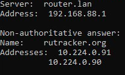

- Тип настройки: VPN
- Тип проблемы: не работает конкретный сайт
- Что с сайтом: сайт открывается долго и не до конца
- Используемый браузер: Firefox 89.0.2, Chrome 109.0.5414.168
{kind=link}
Подтверждаю. Началось с вечера 22.03. Остальное нормально работает.
Это из-за того что заблочили домен static.rutracker.cc - на котором у РуТрекера все вспомогательные web-файлы (джава-скрипты, стили и т.п.)
Пожалуйста, ребята, - добавьте в список Антизапрета static.rutracker.cc
Не совсем так:
Это блок от РКН, но не рутрекера конкретно. Здесь опять повторяется проблема с тем, что выдаваемый Cloudflare IP-адрес случайно попал на заблоченный диапазон.
$ dig static.rutracker.cc
…
static.rutracker.cc. 287 IN A 172.67.163.237
{kind=link}
Напишите администрации Рутрекера у кого есть возможность, чтобы поменяли заблокированный IP-адрес. У меня не получается отправить им сообщение. Пользоваться сайтом невозможно. Кстати, этот сайт - ntc.party тоже не открывется через Антизапрет.
Проверил на двух провайдерах, ни на одном этот ip не блокируется. На одном блокируется static.rutracker.cc по SNI
У меня соединение зависает на этапе Performing TLS handshake to static.rutracker.cc.
Все норм работает, выключайте DoH и IPv6
ничё оно нормально не работает,
со вчерашнего дня
если у вас конкретно работает, то это не значит, что у остальных чототам не так настроено,
какие DoH и IPv6 
Подтверждаю, половина сайта не работает. Только у меня собственный vpn. Но проблема такая же с сегодняшнего дня.
Это вообще не причем.Хахаха. Проблема на стороне сайта, а не в расширении антизапрета
Достаточно пустить запросы к static.rutracker.cc через прокси, чтобы убедиться, что это не так.
Добавлено.
Нет, это внереестровая блокировка по домену.
на “своём” сервере автоматически обновится?
Ну это сильно размытые формулировки без доказательств как таковых. Вы бы хоть с nskoolup и tracert тогда уж начали, а не голословно заявлять. Вот тут да, выяснилось, что с одной подсети проблема есть, а на другой все оке.

Так же есть расхождения, почему-то у кого-то сертификат от гугла идет, а у кого-то от летс енкрупт.
При обращении на rutracker всплывают адреса CF из USA.
Source Address: 172.67.163.237 и на него же PSH, ACK сыпется
И выше все указанное через антизапрет.
а спотык идет на
nslookup rutracker.cc
Server: router.lan
Address: 192.168.88.1
*** No internal type for both IPv4 and IPv6 Addresses (A+AAAA) records available for rutracker.cc
Через goodbyedpi с грязной сборки на openvpn все открывается прекрасно.
P.S. от антизапрета прилетают разные ip шлюза, не работает на 192.168.104.1, на 192.168.120.1 работает.
Через pac-скрипт через аддон все есть, если чисто с впн антизапрета, сайт работает без логотипа, но не работает с 120 подсети шлюза в роутах.
Все работает теперь
Зачем разумеется? Весь прошлый год этот сайт чудил или был под жестким ddos атакой
Есть большая разница, между сайтом, который даже до куки не доходит и сайтом, который выкидывает ошибку клаудфлейр. Сайт прекрасно открывался с билайна, а вот с мегафона нет, скрипт подправили, теперь открывается везде.
" и так-же он октрывался, если подкинуть губайдпи"
Раз только у вас так открывался, не значит что у всех так было.С Он даже через VPN не прогружался толком у некоторых пользователей форума, в том числе и у меня.Сейчас исправили данный косяк с их стороны.Никакие обходилки и прочие инструменты не работали.О чем вы
Это было в ноября 2023 г, а мы тут обсуждаем вчера, подумой.
Иии? После исправления того косяка, как работало загрузка сайта через расширение антизапрета и так работает по сей день(даже с DoH и IPv6).Но видимо позавчера были траблы с их сервером раз даже через VPN половина сайта недоступна
Еще раз повторяю, дело не в расширении антизапрета
Ну т.е. ты даже никак не анализировал, но утверждаешь что рутрекер уиноват с пруфами того как их когда-то там дудосили. Ну чел емае, ты бы хоть wireshark скачал и сдампил как подключение происходит. Валдику я уже все скинул и там оченьвидно, что подключения не туда куда надо было.
Я понятия не имею, о чём вы говорите, и куда смотрет в ваших дампах. Проблема в блокировке на ТСПУ.